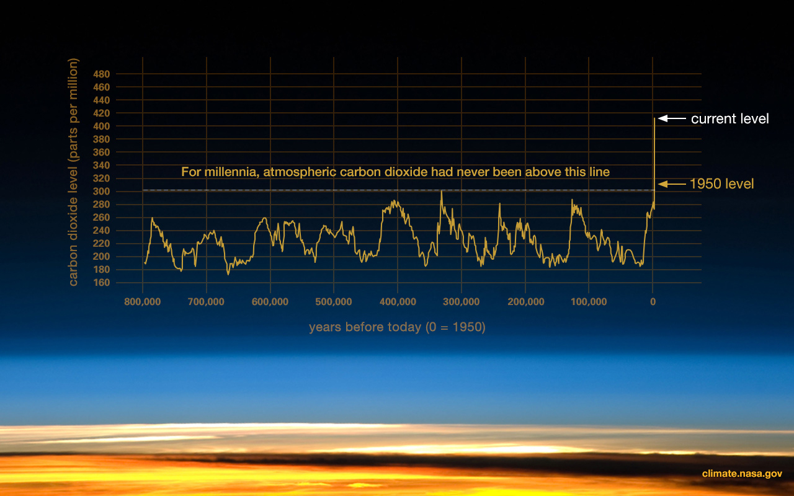
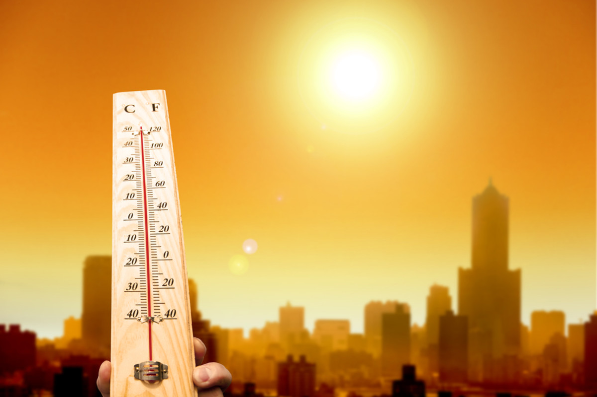
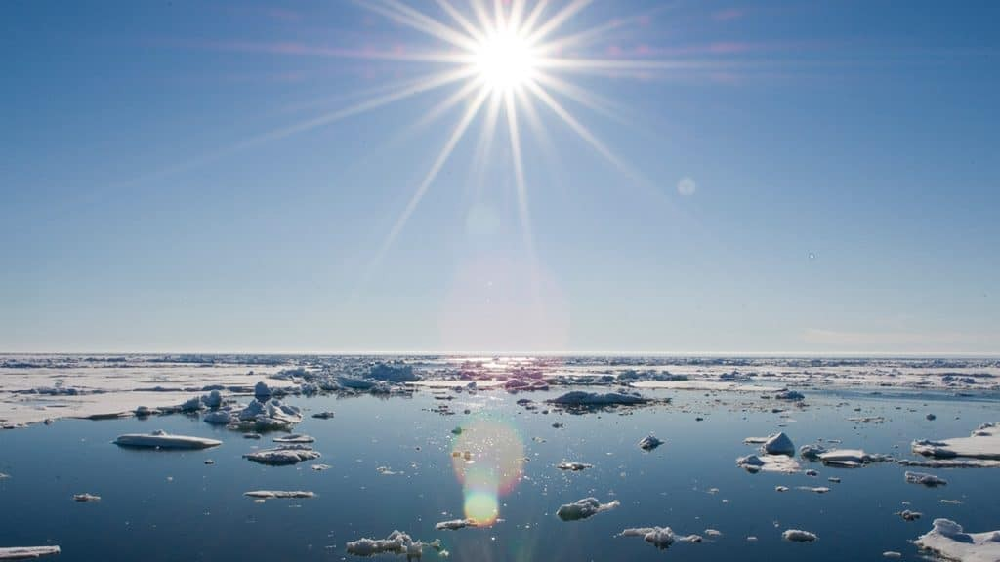
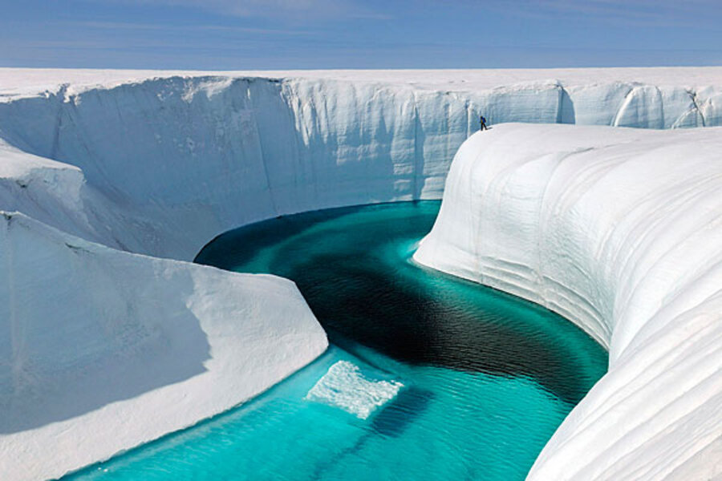

Contributing Factors to Global Warming

This graph, based on the comparison of atmospheric samples contained in ancient ice cores and more recent direct measurements, provides evidence that atmospheric CO2 has increased dramatically since the Industrial Revolution compared to paleoclimatologic measurements over the past 800,000 years.
— Intergovernmental Panel on Climate Change
The Evidence for Rapid Climate Change

Global Temperature Rise
The planet's average surface temperature has risen about 2 degrees Fahrenheit (1 degree Celsius) since the late 19th century, a change driven largely by increased carbon dioxide emissions into the atmosphere and other human activities. Most of the warming occurred in the past 40 years.

Warming Ocean
The ocean has absorbed much of this increased heat, with the top 100 meters of ocean showing warming of more than 0.6 degrees Fahrenheit since 1969. Earth stores 90% of the extra energy in the ocean.

Shrinking Ice Sheets
The Greenland and Antarctic ice sheets have decreased in mass. Data from NASA's Gravity Recovery and Climate Experiment show Greenland lost an average of 279 billion tons of ice per year between 1993 and 2019, while Antarctica lost about 148 billion tons of ice per year.